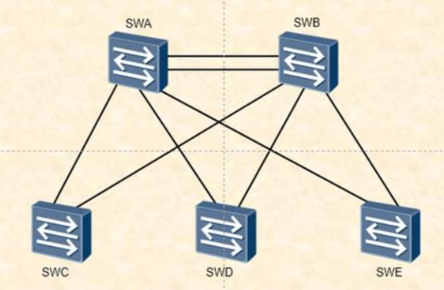
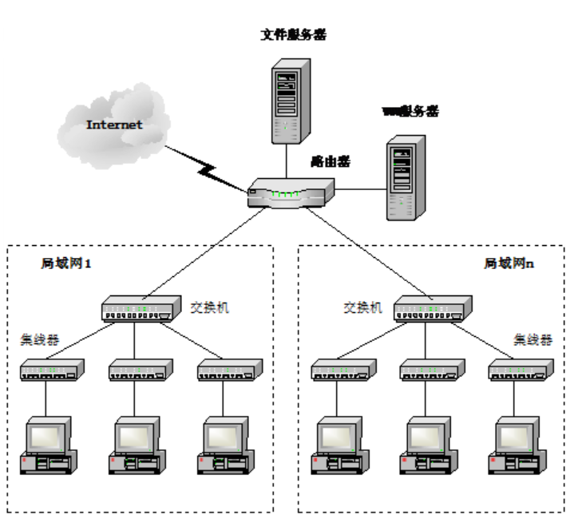
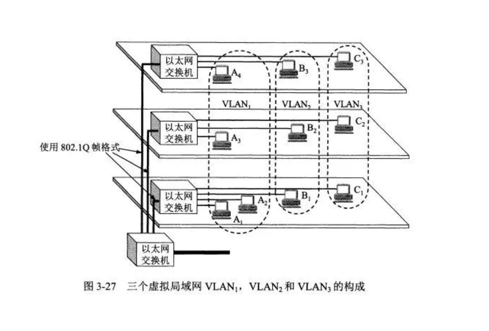

局域网交换与虚拟局域网专题

局域网交换
交换机操作
交换机主要执行两种功能，分别是基于MAC地址建立并维护交换表(Switching Table)以及将数据帧从接口转发出去到达目的地(Switching Frames)
其中需要注意的是交换机在通电后（一般通电即开机）才开始记录学习MAC地址，同时因为数据帧的源地址不可能是广播地址，所以交换机学习不到广播地址；交换机在转发数据帧时如果MAC table中没有相关记录，则会向所有端口泛洪
对称交换
$Symmetric~Switching$
对称交换在具有相同带宽的端口之间提供交换连接，但可能会引起瓶颈问题(bottlenecks)，因为对服务器的访问流量会显著大于其他端口的流量
非对称交换
$Asymmetric~Switching$
非对称交换则可以在带宽不同的端口之间提供交换连接，因此连接服务器的端口的带宽一般显著大于其他端口的带宽，但需要交换机具备内存缓冲(memory buffering)的机制
内存缓冲
$Memory~Buffering$
内存缓存是交换机中用来临时存储需要转发的数据直到其能够被正确转发的内存区域，其中又可以分为两类内存缓冲
基于端口(Port-based)的内存缓冲
每一个端口都有单独的内存缓冲队列，可能会因为目的端口的繁忙导致数据帧的传输延迟
共享内存(shared memory buffering)
为所有端口通用的内存缓冲，允许数据帧从一个端口RX（receive），然后从另一个端口TX（transmit），中途不需要进入另一个等待队列
交换方法
存储并转发(Store-and-Forward)
交换机接收整个数据帧，校验无问题后才转发
直接转发(Cut-through)
不经过校验直接转发数据帧，可以减少网络时延(latency)，其中又可以分两部分，分别是快速转发(Fast Forward)和免碎片化转发(Fragment Free)，前者需要检查的只是目的MAC地址是否有误，后者需要检查帧是否碎片化，方法是检查前64字节确认是否为碰撞碎片
交换机分类
第二层交换机
指位于OSI参考模型第二层的交换机，只有一个MAC地址，属于常规的交换机
第三层交换机 指位于OSI参考模型第三层的交换机，每个端口都配置了独立的MAC地址，同时具有虚拟接口(virtual interface)，能够完成VLAN间的路由选择，但没有路由学习能力，但是它基于硬件实现，性能远远优于路由器的软件实现
第四层交换机
为交换机附加了解析端口号以确定相应服务内容的功能，体现出SDN(Software Definite Network，指抛弃路由器，由软件控制加上交换机进行组网)的趋势
多层交换机
兼具上述三层交换机的功能
生成树协议STP
$Spanning-Tree~Protocol$，注意与屏蔽双绞线的缩写进行区分
桥接环路
$Bridging~Loops$
网络中的环路可能因故意的保留冗余链路或不小心导致的配置错误引起，其中对后者来说广播环路(broadcast loops)以及桥表损坏(bridge-table corruption)会导致相当严重的错误
冗余导致环路

网络链路的冗余如果形成了环路会导致性能的严重损失，对于第二层的链路结构来说，由于数据帧并不携带TTL限制其跳数，因此如果某个帧的传输形成环路会导致严重的问题，它会一直在链路中循环直到某个交换机关机或链路故障。例如在上图中，如果C突然关机，然后A与B的MAC地址表中将其信息删去，这时E发送了一条需要由C来转发的帧，由于A与B的MAC table中均无相关记录，因此进行泛洪寻找其地址，然后至少会导致A与B之间的环路持续传递该单播泛洪帧
STP概述
功能
由于树上不存在回路，利用STP协议可以做到允许链路中冗余路径的出现而又避免环路问题对网络性能的影响
其做法是计算出一棵稳定的生成树网络拓扑（注意STP在网络拓扑中仅生成一棵树，而OSPF中每个路由器都生成一棵以自己为根的树），不在该树状拓扑中的链路处于阻塞状态，在阻塞状态链路上收到的数据帧会被直接丢弃
用于构建STP树的帧称为生成树帧**(Spanning-tree Frames)，也称为网桥协议数据单元(Bridge Protocol Data Units, BPDUs)**
决定序列
$Decision~Sequence$
- 决定生成树的根，选择BID(Bridge Identification)最小的作为树根，也即最低的MAC地址
- 决定各个交换机到树根的哪条路径代价最低
- 决定对链路负责的发送方（每条链路有两个交换机），选择BID最小的作为发送方
- 决定具体选择哪条路径，如果一台交换机上有多条等效路径，则选择端口号最低的（对于第三层交换机来说）
术语基础
BPDUs
用来在交换机与交换机之间传递链路信息，帮助构建网络的生成树拓扑的数据单元，主要内容包含Root BID，Root Path Cost（表示当前距离根网桥的路径代价，代价越低越好），Sender BID（表示发送该BPDU的交换机ID）和Port ID（表示发送该交换机发送该BPDU使用的端口号），其余内容还包括协议ID，版本，消息类型，标志，消息老化时间，最大老化时间，Hello时间和转发延迟
BID
长度为8字节，高2个字节表示优先级，取值在0到65535之间，默认为32768，数值越小越优先，可以且一般以十进制形式来表示；低6个字节为交换机的MAC地址，通常以十六进制形式表示
Root War
所有交换机通过先比较优先级数值最小，再比较BID最低的原则选举一个根桥，这个过程通常称为root war
Path Cost
用于计算路径代价的数值，与链路带宽有关，常用值如下表所示
| 带宽 | STP Cost |
|---|---|
| 4Mbps | 250 |
| 10Mbps | 100 |
| 16Mbps | 62 |
| 45Mbps | 39 |
| 100Mbps | 19 |
| 155Mbps | 14 |
| 622Mbps | 6 |
| 1Gbps | 4 |
| 10Gbps | 2 |
STP States
STP State是通过设置在端口上的配置政策决定，并由STP基于传输网络模式和潜在环路进行修改维护的端口状态
- Blocking，不转发数据帧，但是接收BPDUs
- Listening，不转发数据帧，但是侦听数据帧
- Learning，不转发数据帧，只学习MAC地址
- Forwarding，转发数据帧，并且学习地址
- Disabled，不转发数据帧，不接收BPDUs
初始化STP收敛过程
决定根桥
各个交换机发送BPDUs将自己声明为根桥，并检查所有端口接收和发送的BPDUs，对于所有接收的BPDU，如果它的发送者的优先级或者BID比当前端口所记录的更低，就将对应的发送者设为根桥，替换旧值
选择根路径(Root Path)
每一个非根桥必须要选举出一条根路径，一个网桥的根路径是距离根桥最近的端口，STP cost的计数是从根桥发出BPDU，每通过一个端口就增量计数，而非预先知晓的
选举指定端口(Designated Port)
每一段链路都有一个指定端口，负责发送与接收该段链路与根桥之间的网络信息，选举的方式是选出当前链路上的两个端口中距离根桥更近的一方，如果相同则比较BID；具备指定端口的网桥称为该段链路的指定网桥(Designated Bridge)，所有的网桥都会将非指定端口以及非根端口置于Blocking状态，因此网桥上的所有活跃端口均为指定端口或根端口，根桥上的所有端口均为指定端口
虚拟局域网VLAN
概述
在传统局域网中，用户在物理意义上基于接入的不同集线器（交换机）被分组，路由器将局域网分段并提供广播防火墙
而在虚拟局域网中，管理者可以将用户基于逻辑地根据用途，部门或应用来分类，通过软件完成配置
两者区别
虚拟局域网工作在OSI参考模型的第二层和第三层，能够控制网络的广播域，允许管理者进行赋权并提供更好的网络安全性


虚拟局域网(IEEE 802.1q)
虚拟局域网可以无视物理上的链路段差异，将网络设备进行逻辑上的划分，并在其上创建一个单独的广播域，也即广播帧只会在具有相同的VLAN ID的设备之间传输；但是跨VLAN的传输由于已经跨网段，所以需要通过路由器进行转发，抑或是通过第三层交换机的虚拟接口进行转发
VLAN结构
由于配置了VLAN后，帧的传输需要带上VLAN ID的标记，因此跨VLAN通信需要支持主干链路(backbone or trunk)，主干链路允许携带不同VLAN ID的数据帧通过它进行传输，通常需要更高的带宽，一般使用交叉线
数据帧的转发与过滤
交换机在决定对数据帧的转发(Forwarding)还是过滤(Filtering)时依赖于两个技术： 数据帧过滤(Frame Filtering)，检查每个数据帧的MAC地址或者第三层协议类型，交换机中有一个存储着MAC地址与VLAN ID的映射关系表，各个交换机之间会共享这个映射信息
数据帧标记(Frame Tagging)，在VLAN的数据帧在主干链路上传播之前在它的首部添加一个标签，这个标签只能被支持并开启了VLAN的交换机或者路由器进行识别，当数据帧离开主干链路时，交换机会将该标签去除以防影响目的主机的理解，该技术工作在第二层，并且对交换机处理能力的要求很低
数据帧标记标准
IEEE802.1Q，由IEEE制定的数据帧标签标准，可以通过这个标签识别它所属的VLAN
Inter-Switch Link(ISL)，Cisco的标准，它在数据帧的首部添加了26字节的标识信息以及在其末尾添加了4字节的CRC校验码
VLAN静态配置
VLAN的配置需要满足的要求是在同一广播域的端口需要配置相同的VLAN，在不同广播域的端口必须配置不同的VLAN，由管理员手动配置，更安全可控
其中VLAN 1一般是交换机出厂时默认的虚拟局域网，所有端口都置于VLAN 1下
以端口为中心的VLAN
$Port-Centric~VLANs$
在同一VLAN中的所有的节点最终都连向路由器的同一接口，利于让管理更简单，报文安全性更高，不会泄露到另一VLAN
接入连接
$Access~Link$
指的是只传输同一VLAN的数据帧的与交换机相连的链路，当前的VLAN被称为当前端口的本地虚拟局域网(native VLAN)，所有与这个接口相连的设备并不知道这个虚拟局域网的存在
主干连接
$Trunk~Link$
指的是支持携带不同VLAN标签的数据帧进行传输的链路，原则上必须使用交叉线，但现目前有许多交换机支持自动反转技术，一般用于交换机之间或交换机与路由器在快速以太网或千兆以太网端口上的连接，利于在实现虚拟局域网时节省端口数
主干连接和它两端的端口不属于任何虚拟局域网，但它有拥有本地虚拟局域网，即当其跨VLAN传输故障时它所使用的VLAN ID
虚拟局域网间路由
按照以端口为中心的VLAN思想，每一个虚拟局域网都需要连接到路由器一个单独的端口，但路由器的端口资源通常相当宝贵，为了节约端口数量，支持虚拟局域网的路由器引入的新的机制，即子接口(Subinterface)
路由器端口在指定其数据帧标记的封装标准后即可为它划分子接口，用IP地址作为区分来为每个子接口配置其属于的VLAN，虽然存在带宽争用，但配置简单且节约了路由器端口数量，这种配置方式也称为单臂路由(Router-on-a-Stick)